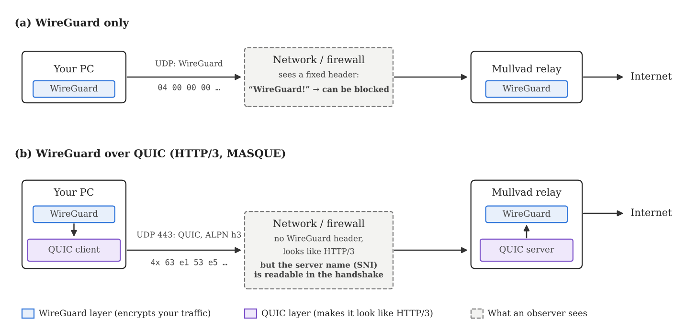
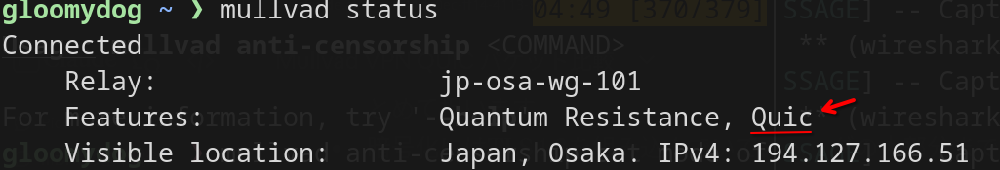
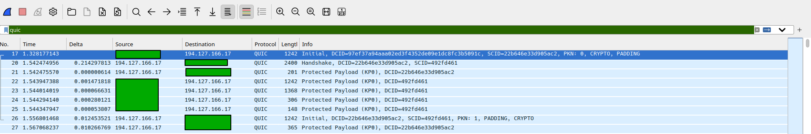
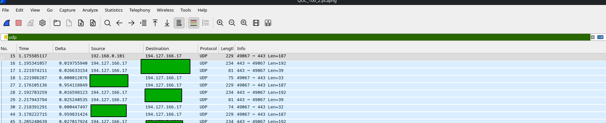
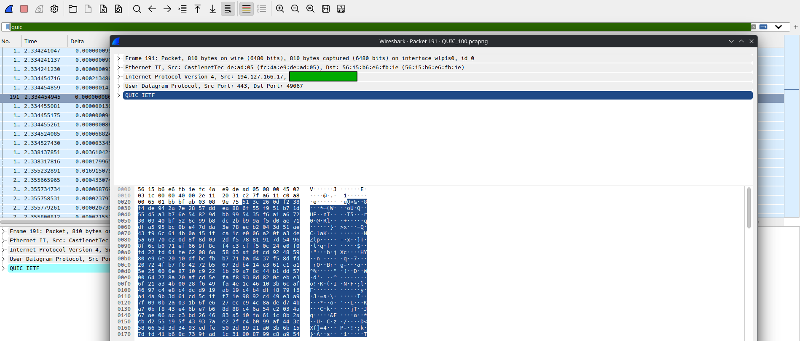
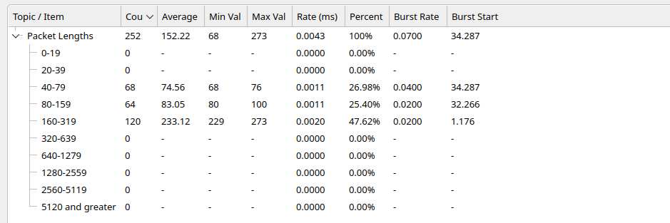
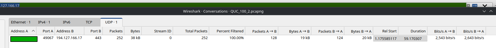
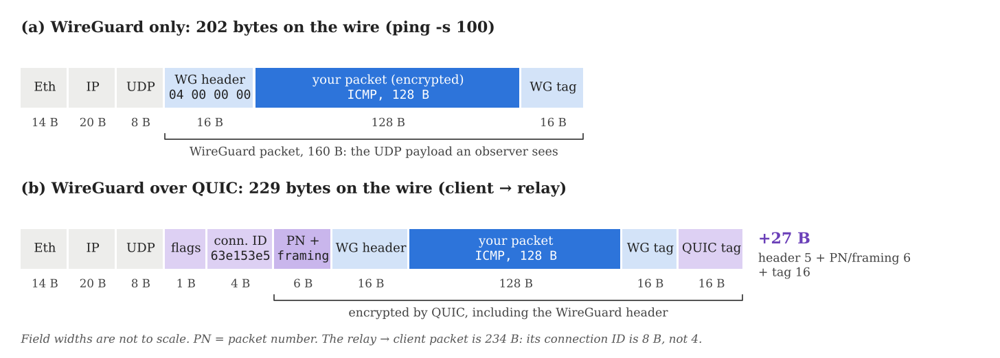
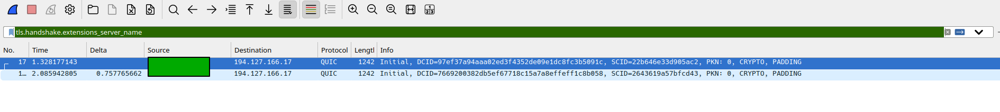
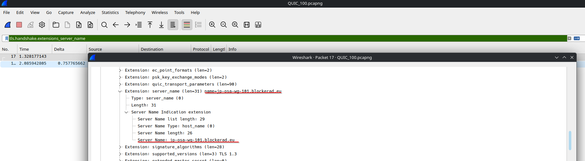

QUIC
In the previous article, I looked at how Shadowsocks hides WireGuard traffic. Mullvad VPN has another anti-censorship option: QUIC. Instead of making packets look like random bytes, it disguises the VPN as ordinary HTTP/3 web traffic, the kind Google and YouTube use every day.
In this article, I capture traffic with Wireshark and compare plain WireGuard with WireGuard over QUIC. How to use Wireshark and what plain WireGuard looks like were covered in the previous article, so I skip them here and focus on what QUIC changes.
What is QUIC?
QUIC is a transport protocol originally developed by Google and standardized by the IETF in 2021 (RFC 9000). It is meant to replace the combination of TCP and TLS. QUIC runs over UDP instead of TCP, and encryption is built in: it uses TLS 1.3 internally, and there is no unencrypted mode.
Compared with TCP + TLS, QUIC has several advantages:
- Faster connection setup. TCP and TLS each need their own handshake. QUIC combines them, so a new connection needs only one round trip, and a resumed connection can send data immediately (0-RTT).
- No head-of-line blocking. One connection carries many independent streams. A lost packet only delays the stream it belongs to, not the others.
- Connection migration. A connection is identified by a connection ID, not by IP address and port, so it survives a switch from Wi-Fi to mobile data.
HTTP/3, the latest version of HTTP, runs on QUIC. A large share of web traffic today is QUIC on UDP port 443, which makes it a good disguise: blocking it would break a lot of the web.
Mullvad uses QUIC as an outer wrapper, much like Shadowsocks. Its implementation is based on MASQUE (RFC 9298, Proxying UDP in HTTP). Your client opens an HTTP/3 connection to the Mullvad relay, and each WireGuard packet is sent inside it as a QUIC datagram. The relay unwraps it and hands the WireGuard packet to the WireGuard server.

Setup
You can turn QUIC on from the command line:
mullvad anti-censorship set mode quicmullvad status now lists QUIC under Features.

mullvad status with QUIC
enabled.To turn it off again:
mullvad anti-censorship set mode offCapturing with Wireshark
Test conditions
- Client: Linux laptop on Wi-Fi (
wlp1s0), Wireshark 4.7 - VPN: Mullvad, WireGuard over QUIC, Osaka relay
(
jp-osa-wg-101) - Traffic:
ping -c 60 -s 100, the same as in the previous article - Plain WireGuard figures are taken from the previous article
The capture procedure is the same as before: capture on the physical
interface, run ping, then filter on the entry relay. With QUIC, my
entry relay was 194.127.166.17, port 443.
QUIC or UDP?
What Wireshark shows depends on whether the capture includes the start of the connection.
If you start capturing before the VPN connects, Wireshark
sees the QUIC handshake (the Initial and Handshake
packets) and labels the whole flow as QUIC. You can
then filter with quic.

If the connection is already up when you start capturing, the
Protocol column says only UDP, so filter with
udp or the relay address.

The reason is the packet format. During the handshake, QUIC uses long-header packets, which carry a version number and the lengths of the connection IDs, so Wireshark can identify them. After the handshake, QUIC switches to short-header packets: one flag byte, the connection ID, and then ciphertext. There is no version and no length field, so without having seen the handshake Wireshark cannot tell the packet is QUIC. If you want to label them anyway, use Analyze > Decode As and set UDP port 443 to QUIC.
Open a packet and the WireGuard header (04 00 00 00) is
gone. The payload is ciphertext. It is not completely random, though:
the first byte is a flag byte (always between 0x40 and
0x7F in short-header packets), and the next bytes are the
connection ID, which is the same in every packet of the connection. In
the packet below, from the relay, it is
3c 26 0d f2 38 f4 de 94. In the other direction it is
63 e1 53 e5.

Comparison with plain WireGuard
To compare under the same conditions as the plain WireGuard capture, which also has no handshake, the following uses the capture without the handshake.
In Protocol Hierarchy, the top layer is Data, as with Shadowsocks, instead of WireGuard Protocol.

Packet Lengths is where QUIC looks very different. Plain WireGuard produced exactly 120 packets of 202 bytes. With QUIC, the same 60 pings produced 252 packets of several sizes.

In Conversations, there is a single UDP flow to
194.127.166.17, port 443, the standard
HTTPS port, instead of the random-looking port 43130 used by plain
WireGuard.

How much overhead does QUIC add?
Breaking down the 252 packets:
| Packet | WireGuard only | WireGuard + QUIC |
|---|---|---|
| Echo request (client → relay) | 202 B × 60 | 229 B × 60 |
| Echo reply (relay → client) | 202 B × 60 | 234 B × 55, 273 B × 5 |
| QUIC control packets (mostly ACKs) | none | 68–100 B × 132 |
| Total | 120 packets, 24,240 B | 252 packets, 38,360 B |
Each ping packet grows by 27 bytes on the way out and 32 bytes on the way back. The figure below shows where the bytes go. QUIC adds a short header (a flag byte and the connection ID), 6 bytes for the packet number and the datagram framing, and a 16-byte authentication tag. The reply is 5 bytes larger because the relay's connection ID is 8 bytes instead of 4. The exact split of the 6 bytes is encrypted, so it cannot be read from the capture.

ping -s 100. QUIC wraps the
entire WireGuard packet, including the 04 00 00 00 header
that identifies it.The bigger cost is the number of packets. WireGuard simply sends datagrams and never acknowledges them. QUIC acknowledges what it receives, so each ping also triggers small ACK packets in both directions. The result is about 4.2 packets per ping instead of 2, and 639 bytes per ping instead of 404, about 1.6 times as much. Five of the replies were 273 bytes because an ACK was bundled into the same packet (234 + 39 bytes).
The server name is visible
QUIC has one weakness that Shadowsocks does not. The first packets of a QUIC connection, the Initial packets, are encrypted, but with keys derived from public information: a salt fixed in the standard (RFC 9001) and the connection ID written in the packet. This is by design, so that the server can read the first message. It also means anyone watching the network can decrypt it, and Wireshark does so automatically.
The first message is a TLS ClientHello, and it contains the Server Name Indication (SNI), the name of the server you are connecting to. In a capture that includes the handshake, filter with:
tls.handshake.extensions_server_name
Then open a packet and follow QUIC IETF > CRYPTO > TLSv1.3 Record Layer > Handshake Protocol: Client Hello > Extension: server_name.

jp-osa-wg-101.blockerad.eu.The name jp-osa-wg-101.blockerad.eu is the Mullvad relay
from mullvad status, under a domain used by Mullvad. A
firewall that blocks by SNI, which is common, can recognize the
connection as Mullvad from this one packet, even though everything after
it is encrypted. The ClientHello also announces ALPN h3,
which is what makes the connection look like HTTP/3.
Summary
| WireGuard only | WireGuard + QUIC | |
|---|---|---|
| Wireshark Protocol column | WireGuard | QUIC (with handshake) / UDP (without) |
| Protocol Hierarchy (no handshake) | UDP > WireGuard Protocol | UDP > Data |
| Start of payload | Always 04 00 00 00 (data) |
Flag byte + fixed connection ID |
| Entry relay (this test) | 194.127.166.81:43130 |
194.127.166.17:443 |
Frame length, ping -s 100 |
202 B | 229 B out, 234 B back |
| Packets / bytes for 60 pings | 120 / 24,240 B | 252 / 38,360 B |
| Server name visible | No | Yes, in the handshake |
QUIC hides WireGuard well against simple pattern matching: the
WireGuard header disappears, and the traffic goes to port 443 with
ALPN h3, like ordinary HTTP/3.
The server name is readable in the handshake, so a firewall that blocks by SNI or by Mullvad's IP addresses can still stop it. Networks that block or throttle UDP 443 altogether will stop it as well. As with Shadowsocks, packet sizes and timing are still visible: here a fixed pair of 229- and 234-byte packets once per second, which is not what web browsing looks like.
References
- Mullvad, Introducing QUIC obfuscation for WireGuard: https://mullvad.net/en/blog/introducing-quic-obfuscation-for-wireguard
- RFC 9000, QUIC transport: https://www.rfc-editor.org/rfc/rfc9000
- RFC 9001, Using TLS to secure QUIC (Initial keys): https://www.rfc-editor.org/rfc/rfc9001
- RFC 9221, Unreliable datagram extension to QUIC: https://www.rfc-editor.org/rfc/rfc9221
- RFC 9298, Proxying UDP in HTTP (MASQUE): https://www.rfc-editor.org/rfc/rfc9298